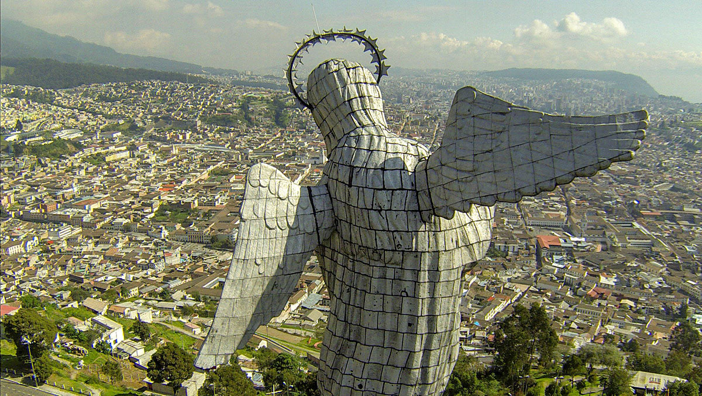

Iglesia de San Francisco
Quito 2020

La Virgen del Panecillo
Quito 2025
PreviousNext
HISTORIA
En la década de 1930, las clases altas del centro de la ciudad se desplazaron al norte. Surgieron barrios residenciales dentro del esquema de "ciudad jardín". Los espacios del centro fueron ocupados por inmigrantes de las provincias vecinas.
Durante el siglo XX la inmigración fue mayormente de otros países latinoamericanos que llegaron debido a guerras civiles, así como crisis económicas, entre otras, entre los que se puede destacar los argentinos, chilenos, uruguayos, etc, igualmente muchos europeos llegaron a Quito durante y después de la segunda Guerra mundial.
Hoy en día y más a partir del año 2000, la inmigración se centro principalmente en colombianos que han huido por la guerra interna que tiene ese país, así como atraídos por la dolarización y por ingresos mayores a los que podrían acceder en su país. Se estima que más de medio millón de colombianos vive en Ecuador de forma legal.
Apartir del 2020 Quito se convirtió en una de las ciudades con más flujo de inmigrantes de todas partes del mundo, destacando que los quiteños y quiteñas son conocidos por recibir de manera muy amable y respetuosa a los que buscan nuevas oportunidades en la carita de Dios.
VIDEOS
Estos son videos de venezolanos hablando sobre los ecuatorianos que se han viralizado en redes sociales. En una de las grabaciones una joven los describe como “indios y feos”.Este criterio causó malestar en los compatriotas, incluso algunos venezolanos han ofrecidos disculpas al país que los ha recibido y en el que actualmente viven.
EFECTOS
COMENTARIOS
COMENTARIOS
"Sé muy bien que nada de lo que haga va a cambiar lo que ya sucedió y nada de lo que diga cambiará mi vida", añadió la joven venezolana, quien dijo estar arrepentida por el alboroto resonado en redes sociales."De todo corazón estoy arrepentida y nuevamente les pido perdón"
"Qué ridicula mamita! si no le gusta el país Ecuador... ¡LARGUESE! No la necesitamos! porque basura como usted encontramos en la vuelta de la esquina, debería estar agradecida por lo que le da Ecuador!"